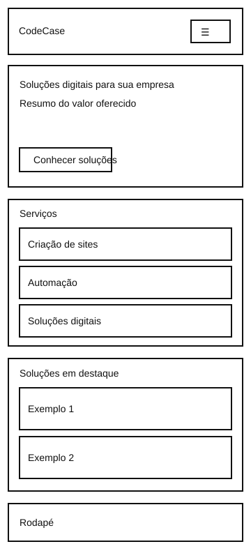
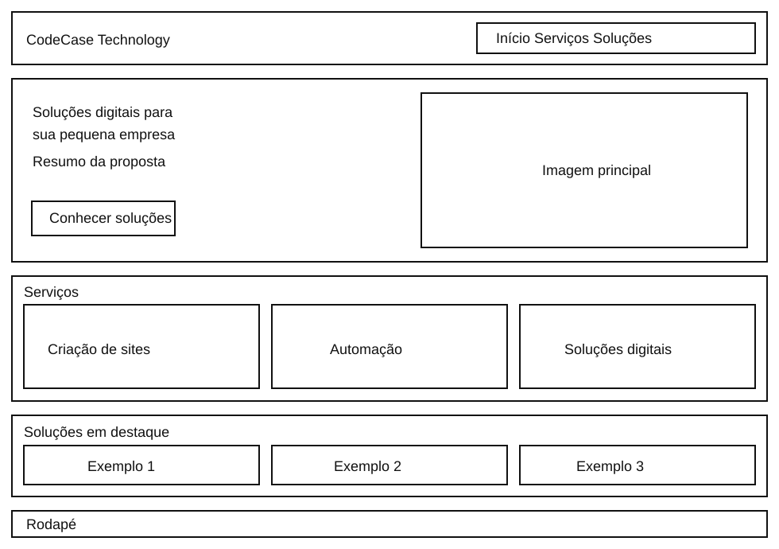

Planejamento do site
Este documento orienta a criação de um site responsivo para uma empresa de tecnologia voltada a pequenas empresas. As escolhas poderão ser refinadas durante o desenvolvimento.
Nome do site
CodeCase Technology. “Code” remete à criação de software e “Case” à solução de situações reais de cada cliente. O nome comunica tecnologia aplicada a necessidades concretas e permite ampliar a oferta de serviços no futuro. O nome do domínio ainda não foi definido.
Finalidade do site
Apresentar a CodeCase Technology e ajudar pequenas empresas a encontrar soluções digitais adequadas aos seus processos. O site explicará serviços de criação de sites, automação de tarefas e soluções digitais; mostrará exemplos ilustrativos de aplicações; e oferecerá um formulário para o visitante descrever sua necessidade e solicitar contato.
Estrutura prevista
- Início (index.html): proposta da empresa, benefícios, resumo dos serviços e chamada para contato.
- Serviços (servicos.html): detalhes sobre sites, automações e soluções digitais, com exemplos de uso.
- Soluções (solucoes.html): catálogo pesquisável de ideias e aplicações para pequenos negócios, além do formulário de contato.
- Confirmação (obrigado.html): apresenta os dados enviados pelo formulário; é uma página auxiliar.
Os exemplos serão identificados como soluções possíveis, sem sugerir que já foram entregues a clientes reais.
Cenários do público-alvo
- “Tenho uma pequena loja. Como um site pode apresentar meus produtos e facilitar o contato com clientes?”
- “Minha equipe repete tarefas em planilhas todos os dias. Que processos poderiam ser automatizados?”
- “Quero entender as opções antes de pedir um orçamento. Onde encontro exemplos e como descrevo meu projeto?”
O conteúdo deve responder a essas perguntas com linguagem simples, exemplos claros e caminhos visíveis para conhecer os serviços e entrar em contato.
Esquema de cores
A combinação de azul profundo e verde azulado busca transmitir confiança e inovação. Fundos claros e texto escuro favorecem a leitura.
Cabeçalho, títulos e rodapé.
Botões, links e detalhes de destaque.
Fundo da página e áreas de respiro.
Parágrafos e textos de apoio.
O próprio documento aplica esta paleta. Texto branco sobre o azul profundo e o verde azulado deve manter contraste legível.
Tipografia
Space Grotesk
Usada na marca e nos títulos. Suas formas geométricas reforçam o tema tecnológico.
Inter
Usada em parágrafos, navegação, formulários e botões pela leitura clara em telas pequenas.
Wireframes da página inicial
Esboços estruturais em preto e branco, criados como arquivos SVG separados do HTML. Eles mostram a hierarquia do conteúdo antes da aplicação da identidade visual.


Plano de implementação
O catálogo de soluções terá pelo menos 15 itens em um arquivo JSON local. Cada item terá nome, categoria, público indicado, benefício e descrição. A página Soluções buscará os dados com fetch() e try...catch, exibirá os itens dinamicamente e permitirá filtrar por categoria.
Um diálogo modal mostrará detalhes de cada solução. O localStorage guardará a categoria escolhida pelo visitante. O formulário enviará os dados por GET para a página de confirmação. O JavaScript será organizado em módulos ES.